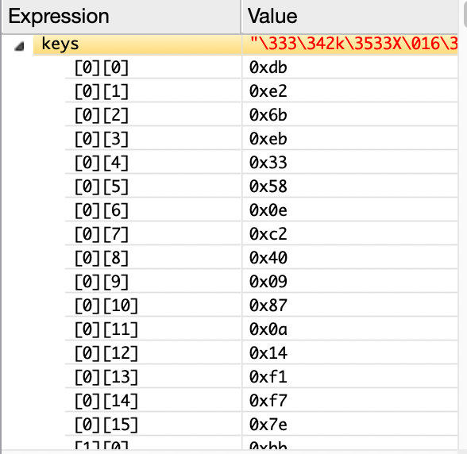
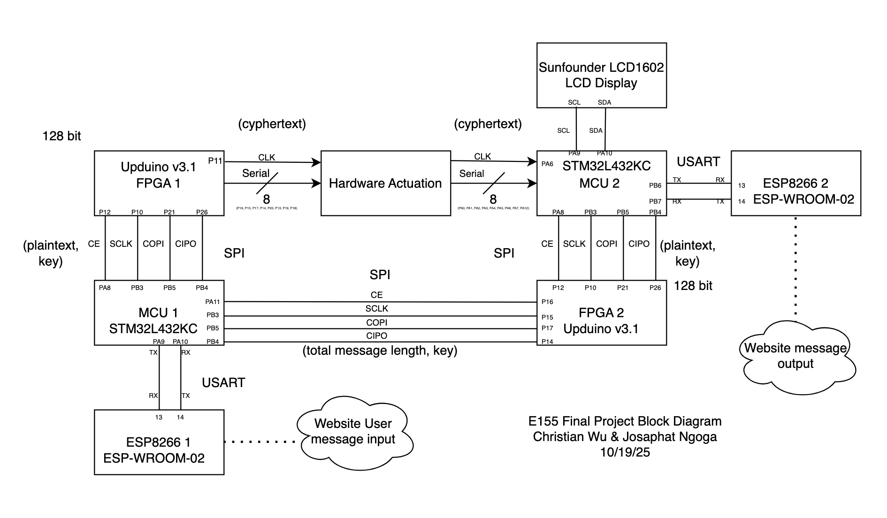
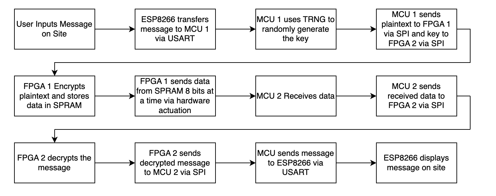

MechCrypt: Hardware-Encrypted Messaging System
Task Allocation Summary
The work for the past days has been divided as follows:
Christian Wu worked on MCU tasks, including web interface and request handling, message parsing, TRNG key generation, LCD, and transfer/receiving communication protocols regarding either of the MCUs. Also responsible for LCD display hardware and configuration
Josaphat Ngoga worked on FPGA tasks, including encryption/decryption, SPRAM read/write, message sending, bridge module, and FPGA modules to handle SPI communications, as well as relevant MCU drivers where this crosstalk is implemented. Also responsible for setting up various mechanical components.
We worked together in setting up all hardware: Relay and solenoid blocks for the actuation system, as well as LCD and ESP8266 wiring.
Progress Summary
FPGA Tasks and Modules
On the sender side, we have the following modules:
aesEncryption(): Receives a 128-bit plaintext block and key from MCU 1 and encrypts it, returning the ciphertext and signal to show encryption is done.
spramWrite(): Receives the 128-bit ciphertext and splices it into 8 blocks of 16 bits, and each is written into a specific SPRAM block. The module returns the base address to help the read function and a signal that shows SPRAM writing is done.
spramRead(): Starting from the base address received from spramWrite(), it sequentially reads the SPRAM block, reconstructing the 128-bit ciphertext.
msgSend(): Receives the ciphertext, splices it into 16 bytes, and sends one at a time, starting from the MSB bytes. It has a parameter that allows us to change the speed of the transfer clock.
All of these modules have been tested with respective testbenches to validate functionality and are combined into the sender() top module and interact as shown in the block diagram below:
{kind=link}
On the receiver side, we have the following modules:
bridge(): Receives the 128-bit key and total message length (represented as 8-bit binary) from MCU 1, and sends them out to MCU 2. All are done through a custom SPI protocol that defines both MCUs as independent masters controlling their own SCK and CS lines
aesDecryption(): Receives a reconstructed 128-bit ciphertext block and key from MCU 1 and decrypts it, returning the plaintext to MCU to decode and display.
msgReceive(): Receiving module to be used in case the MCU proves tough to receive the bytes from the actuators. Receives the byte blocks following the tx_clk defined by the sender and reconstructs the full ciphertext for decryption.
All of these modules have been tested with respective testbenches to validate functionality and are combined into the receiver() top module and interact as shown in the block diagram below:
MCU Tasks and Drivers
On the sender side, we have the following drivers:
- webpage.c: Creates a sender webpage, where the user can write a message, and the webpage will convert it into 128-bit blocks of the ASCII text in hex. When the user hits send, this file will store each block of text and use TRNG to generate a random 128-bit key for each block that exists. It will then send an SPI transaction to the FPGA with the first block and wait for the FPGA’s DONE signal to send subsequent blocks.
Below is a demo result of what the sender website looks like with example input:
{kind=link}
- trng.c: This file initializes TRNG and reads the randomly generated bits from it.

- main.c: This file sets up our clock and peripherals and calls upon the functions in webpage.c to execute the webpage.
Below is a sample SPI transaction from the MCU to FPGA once the MCU receives the user message from the ESP8266 via USART:
{kind=link}
{kind=link}
{kind=link}
On the receiver side, we have the following drivers:
- webpage.c: Creates the receiver webpage, which will update with each unencrypted block sent by the FPGA via SPI. It will also concatenate all the received blocks into readable text, which will match the original message sent by the sender.
Below is a demo result of what the receiver end website looks like with example output:
{kind=link}
lcd_i2c.c: This file writes functions to control different aspects of the LCD, like displaying text and the way the text is displayed. This is a file that was converted from C++ to C, as the vendor of the LCD provided sample Arduino files.
STM32L432KC_I2C.c: This file enables I2C1 functionality between our MCU and LCD on PA9 and PA10.
main.c: This file sets up our clock, peripherals, and calls upon functions in the above files to display the webpage, display on the LCD, and communicate with the FPGA.
Hardware Setup and Demo
Sending the data requires 8 separate lines, representing the transfer of a full byte and a ninth line for the transfer clock that synchronizes the receiver and sender. For each actuator, each line and connection of components was duplicated 9 times. We 3D printed blocks to fix the different components to ensure proper alignment of all the signal lines. Each line involved the following components:
Relay module: Served as a high-voltage switch to activate the solenoid when a logic HIGH is received from the FPGA.
Yellow LED: Serves as a visual indicator that a specific line was triggered. Would turn ON in response to the state of the line as dictated by the FPGA. Each LED is connected to a 100Ω current-limiting resistor.
Solenoid module: Connected to the relay and pulls its actuator arm forward when energized.
Actuator arm: 3D-printed to extend from the arm of the solenoid and press a switch.
Limit switch: Pressed when a solenoid is energized. It will register high when pressed and 0 otherwise. It is connected to a 1kΩ pulldown resistor and configured in Normally Open (NO) mode to ensure this behaviour.
Level shifter: Implementerd using two n-channel MOSFETS. The LCD registers high with a voltage between 3.5 to 5.0V. It was used to ensure that a logic HIGH from the MCU is interpreted correctly by bumping the 3.3V GPIO voltage to the specified range.
20x4 LCD Display: To display certain messages as well as message transfer progress. A level shifter was used to raise the 3.3 V output for SDA and SCL to 5 V.
All these components are fixed in the block. The relay block has a dedicated master switch that kills or turns on the whole system. All hardware was assembled following the schematics below:
{kind=link}
{kind=link}
The assembly of the LCD required a level shifter to boost voltages into the required range as shown below:
{kind=link}
High Level Block Diagram

High Level Data Flow Diagram
